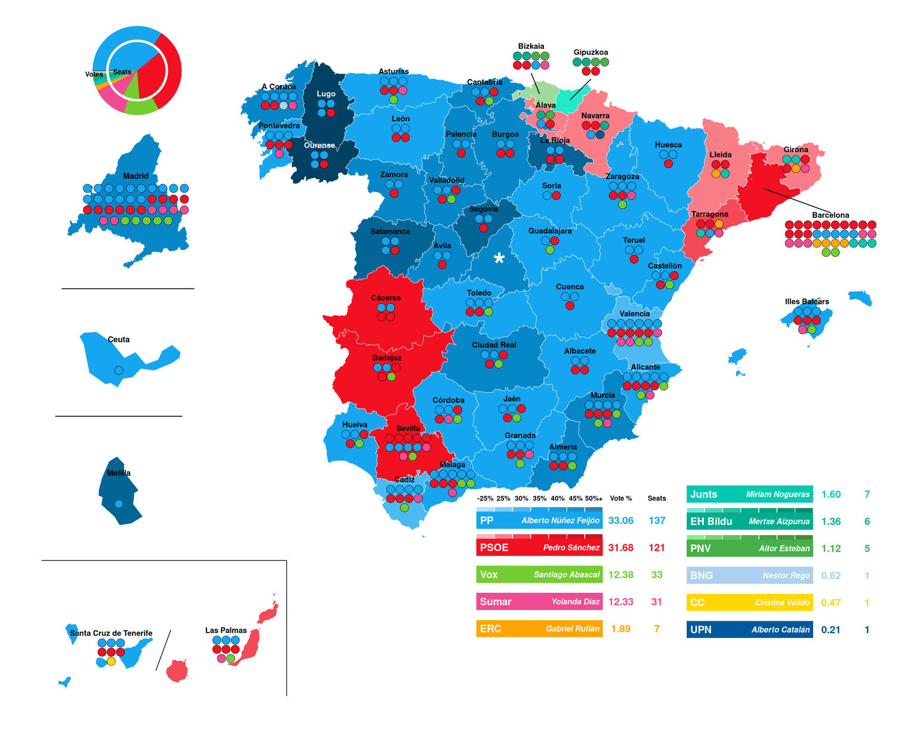

Introduction and reference visualization

The original visualization, created by Gust Justice and published on Wikimedia Commons, depicts the results of the 2023 Spanish general election at the provincial level through a combination of territorial and symbolic encoding. The main purpose of the graphic is to provide, within a single image, a simultaneous reading of seat allocation, the territorial distribution of the vote, and the relationship between votes and parliamentary representation.
The map is based on Spain’s provinces, which are colored according to the party that obtained the highest number of votes in each one. Color serves not only to identify the winning party, but also to convey the strength of its victory through variations in intensity. Darker or lighter shades reflect higher or lower vote shares, making it possible to distinguish narrow wins from more decisive majorities. This dual encoding of party identity and level of support adds informational depth without the need for explicit numerical labels on the map itself.
Superimposed on each province is a set of circular dots representing the seats allocated in that constituency. Each dot corresponds to a single member of parliament and is colored according to party affiliation. This design choice allows the viewer to quickly assess whether representation is concentrated or fragmented. In provinces with a large number of seats, the dots are arranged in compact grid like structures, while in smaller constituencies the layout remains simpler, ensuring clarity and readability across different scales.
The visualization also includes specific zoomed in views for territories with particular geographic or representational characteristics, such as Madrid, Ceuta, and Melilla. These enlargements make it possible to examine seat distribution in areas where the scale of the main map would otherwise limit visual precision. In addition, the graphic features a national level summary in the form of a combined circular chart. The outer ring represents the nationwide share of the vote, while the inner circle shows the overall distribution of seats in the Congress of Deputies. This direct visual comparison highlights potential discrepancies between electoral support and parliamentary representation, a key feature of the Spanish electoral system, which is based on provincial constituencies and the D’Hondt allocation method.
From a political and electoral perspective, the 2023 general election was particularly significant for several reasons. First, it confirmed the persistence of a fragmented party system, moving further away from the classic two party dominance that characterized Spanish politics for decades. Although the Popular Party and the Spanish Socialist Workers’ Party captured a substantial share of the vote, parties operating at both the national and territorial levels continued to play a decisive role in shaping governability.
Second, the influence of nationalist and regional parties once again proved to be crucial. The visualization makes this evident both on the map, where several provinces are won by non statewide parties, and in the seat distribution, where formations such as Junts, EH Bildu, the Basque Nationalist Party, the Galician Nationalist Bloc, and the Canary Islands Coalition appear with a limited but strategically important number of deputies. This pattern underscores how the territorial dimension of voting in Spain strongly conditions the formation of parliamentary majorities and the dynamics of coalition building.
Data sources and preprocessing
HEX_PP_OSCURO <- "#014163"
file_path <- "PROV_02_202307_1.xlsx"
clean_text <- function(x) {
x <- tolower(x)
x <- iconv(x, from = "UTF-8", to = "ASCII//TRANSLIT")
x <- str_trim(x)
x <- str_replace_all(x, "\\s+", "_")
x <- str_replace_all(x, "[^a-z0-9_]", "")
return(x)
}The data used in this project come from the official results of the 2023 Spanish general election published by the Spanish Ministry of the Interior and made available through the national open data portal datos.gob.es. The dataset offers detailed provincial level information, including vote totals and seat allocations by party, together with complementary variables such as electorate size and turnout. Relying on an official and publicly accessible source guarantees both data reliability and analytical reproducibility.
In its original form, however, the dataset is not directly suitable for analysis or visualization. It is designed for administrative reporting rather than analytical use, with multiple header rows, inconsistent variable naming, and a wide structure in which party specific information is dispersed across many columns. For this reason, an extensive preprocessing phase is required to convert the raw data into a coherent and analysis ready format.
The preprocessing process starts with the cleaning and standardization of variable names. Party labels and electoral metrics are extracted from complex headers, normalized into consistent lowercase identifiers, and harmonized to prevent ambiguities. This step is essential for ensuring clarity, reducing errors, and enabling systematic manipulation of party level variables, while maintaining clear distinctions between votes, percentages, and seats.
After the headers are standardized, the data are reshaped from a wide to a long format to support comparisons across parties within each province. Vote shares are then calculated as percentages of valid votes, making results comparable across constituencies of different sizes. Finally, the dataset is reorganized into a structured format in which all key electoral indicators are consistently aligned for each party and province.
Electoral results and color encoding
raw_headers <- read_excel(file_path, skip = 4, n_max = 2, col_names = FALSE)
parties_raw <- as.character(raw_headers[1, ])
metrics_raw <- as.character(raw_headers[2, ])
parties_filled <- zoo::na.locf(parties_raw, na.rm = FALSE)
parties_clean <- clean_text(parties_filled)
metrics_clean <- clean_text(metrics_raw)
clean_names <- ifelse(metrics_clean %in% c("votos", "diputados"),
paste(metrics_clean, parties_clean, sep = "_"),
metrics_clean)
results_cleaned <- read_excel(file_path, skip = 6, col_names = clean_names)
cols_metadata <- c("nombre_de_comunidad", "codigo_de_provincia",
"nombre_de_provincia", "poblacion", "numero_de_mesas",
"censo_electoral_sin_cera", "censo_cera",
"total_censo_electoral", "total_votantes_cer",
"total_votantes_cera", "total_votantes", "votos_validos",
"votos_a_candidaturas", "votos_en_blanco", "votos_nulos")
results_long <- results_cleaned |>
pivot_longer(cols = !all_of(cols_metadata), names_to = c(".value", "partido"),
names_pattern = "(votos|diputados)_(.*)") |>
mutate(votos = replace_na(votos, 0), diputados = replace_na(diputados, 0))
results_calculated <- results_long |>
group_by(across(all_of(cols_metadata))) |>
mutate(p_votos = if_else(votos_validos == 0, 0, (votos / votos_validos) * 100)) |>
ungroup()
results_wide <- results_calculated |>
pivot_wider(names_from = partido, values_from = c(votos, p_votos, diputados),
names_glue = "{.value}_{partido}")
cols_todas <- names(results_wide)
cols_partidos <- setdiff(cols_todas, cols_metadata)
partidos_unicos <- unique(gsub("^(votos|p_votos|diputados)_", "", cols_partidos))
orden_final <- cols_metadata
for (p in partidos_unicos) { orden_final <- c(orden_final, paste0("votos_", p),
paste0("p_votos_", p),
paste0("diputados_", p)) }
results_enriched <- results_wide |> select(any_of(orden_final))party_base <- tribble(
~party, ~base_hex,
"PP", "#15a6ef", "PSOE", "#f11123", "Vox", "#74cd30",
"Sumar", "#ef4a92", "ERC", "#ffa503", "Junts", "#00c8b0",
"EH Bildu", "#00ae8f", "PNV", "#48b049",
"BNG", "#aed0ef", "CC", "#ffd800", "UPN", "#00589c"
)
party_colours <- tribble(
~party, ~bin, ~hex,
"PP", "0-25", "#b1e0f9",
"PP", "25-30", "#7fcdf5",
"PP", "30-35", "#4cb9f2",
"PP", "35-40", "#15a6ef",
"PP", "40-45", "#0687c7",
"PP", "45-50", "#036596",
"PP", "50plus", "#014163",
"PSOE", "0-25", "#fbb0b5",
"PSOE", "25-30", "#f87d87",
"PSOE", "30-35", "#f44956",
"PSOE", "35-40", "#f11123",
"PSOE", "40-45", "#ca0413",
"PSOE", "45-50", "#98020b",
"PSOE", "50plus", "#640106",
"EH Bildu", "0-25", "#c0f8ef",
"EH Bildu", "25-30", "#76f0db",
"EH Bildu", "30-35", "#22e8c7",
"EH Bildu", "35-40", "#00b999",
"EH Bildu", "40-45", "#009076",
"EH Bildu", "45-50", "#006653",
"EH Bildu", "50plus", "#003a2d",
"PNV", "0-25", "#c3e8c3",
"PNV", "25-30", "#9dd99d",
"PNV", "30-35", "#77ca77",
"PNV", "35-40", "#4fbb4f",
"PNV", "40-45", "#399a39",
"PNV", "45-50", "#297429",
"PNV", "50plus", "#184c18"
)
results_final_mapa <- results_enriched |>
bind_cols(
results_enriched |> select(starts_with("p_votos_")) |> mutate(id_row = row_number()) |>
pivot_longer(cols = -id_row, names_to = "partido_temp", values_to = "pct_temp") |>
group_by(id_row) |> slice_max(pct_temp, n = 1, with_ties = FALSE) |> ungroup() |>
transmute(ganador_raw = gsub("p_votos_", "", partido_temp), ganador_pct = pct_temp)
) |>
mutate(
ganador = case_when(
ganador_raw == "pp" ~ "PP", ganador_raw == "psoe" ~ "PSOE",
ganador_raw == "vox" ~ "Vox",
ganador_raw == "sumar" ~ "Sumar", ganador_raw == "jxcat__junts" ~ "Junts",
ganador_raw == "eh_bildu" ~ "EH Bildu", ganador_raw == "eajpnv" ~ "PNV",
ganador_raw == "erc" ~ "ERC", ganador_raw == "bng" ~ "BNG",
ganador_raw == "cca" ~ "CC",
ganador_raw == "upn" ~ "UPN", TRUE ~ toupper(ganador_raw)
),
ganador_bin = cut(ganador_pct, breaks = c(0, 25, 30, 35, 40, 45, 50, 101),
labels = c("0-25", "25-30", "30-35", "35-40", "40-45",
"45-50", "50plus"),
include.lowest = TRUE, right = FALSE)
) |>
left_join(party_colours, by = c("ganador" = "party", "ganador_bin" = "bin")) |>
left_join(party_base, by = c("ganador" = "party")) |>
mutate(final_hex = coalesce(hex, base_hex, "#d3d3d3")) |>
select(-ganador_raw, -hex, -base_hex)This section codes the logic used to transform electoral results into visual encodings within the codebase. The goal is to map complex, multidimensional electoral data onto a reduced set of visual variables while preserving interpretability and analytical fidelity.
For each province, the winning party is identified as the one with the highest share of valid votes. This criterion mirrors the logic of the reference visualization and deliberately prioritizes voter support over seat allocation. Once the winning party is determined, a categorical color scheme is applied. Each party is assigned a fixed base color that is reused consistently across the map, the seat symbols, and the national summary components, ensuring coherence between all visual elements generated by the code.
Beyond party identification, the strength of electoral support is encoded through color intensity. Vote shares are discretized into a limited number of predefined intervals, ranging from narrow pluralities to strong majorities. These classes are mapped to variations in the saturation of the party’s base color. This binning strategy allows the visualization to convey relative strength without introducing numeric labels, which would complicate rendering and reduce legibility. The choice of discrete classes over a continuous scale further improves perceptual clarity and implementation robustness.
The resulting color assigned to each province therefore encodes two dimensions simultaneously: the identity of the winning party and the relative magnitude of its victory. When vote share data are missing or do not match any predefined interval, the code falls back to the party’s base color in order to preserve visual continuity and avoid undefined states.
Spatial data and seat layout
mapa_provincias_raw <- esp_get_prov(year = "2021", epsg = 3857)
melilla_main <- mapa_provincias_raw |>
filter(cpro == "52") |>
st_cast("POLYGON") |>
mutate(area = st_area(geometry)) |>
slice_max(area, n = 1) |>
select(-area)
ceuta_main <- mapa_provincias_raw |>
filter(cpro == "51") |>
st_cast("POLYGON") |>
mutate(area = st_area(geometry)) |>
slice_max(area, n = 1) |>
select(-area)
mapa_provincias <- mapa_provincias_raw |>
filter(!cpro %in% c("51", "52")) |>
bind_rows(melilla_main, ceuta_main)
data_mapa <- results_final_mapa |>
mutate(cpro = str_pad(as.character(codigo_de_provincia), width = 2, pad = "0"))
mapa_completo <- mapa_provincias |>
left_join(data_mapa, by = "cpro")
manual_offsets <- tibble(
cpro = c("08", "48", "20"),
move_x = c(160000, -20000, 50000),
move_y = c(-120000, 80000, 80000)
)
centroids_base <- mapa_provincias |>
st_centroid() |>
select(cpro, ine.prov.name) |>
mutate(
real_x = st_coordinates(geometry)[,1],
real_y = st_coordinates(geometry)[,2]
) |>
st_drop_geometry()
centroids <- centroids_base |>
left_join(manual_offsets, by = "cpro") |>
mutate(
cx = if_else(!is.na(move_x), real_x + move_x, real_x),
cy = if_else(!is.na(move_y), real_y + move_y, real_y),
is_displaced = !is.na(move_x)
)
seats_data <- results_enriched |>
distinct(codigo_de_provincia, .keep_all = TRUE) |>
select(codigo_de_provincia, matches("diputados_")) |>
pivot_longer(
cols = starts_with("diputados_"),
names_to = "party_raw",
values_to = "seats"
) |>
filter(seats > 0) |>
mutate(
party_clean = str_remove(party_raw, "diputados_"),
party = case_when(
party_clean == "pp" ~ "PP",
party_clean == "psoe" ~ "PSOE",
party_clean == "vox" ~ "Vox",
party_clean == "sumar" ~ "Sumar",
party_clean == "erc" ~ "ERC",
party_clean %in% c("jxcat__junts", "junts") ~ "Junts",
party_clean %in% c("eh_bildu", "bildu") ~ "EH Bildu",
party_clean %in% c("eajpnv", "pnv") ~ "PNV",
party_clean == "bng" ~ "BNG",
party_clean %in% c("cca", "cc") ~ "CC",
party_clean == "upn" ~ "UPN",
TRUE ~ "Otros"
),
cpro = str_pad(as.character(codigo_de_provincia), width = 2, pad = "0")
) |>
left_join(party_base |> select(party, base_hex), by = "party")
province_stats <- seats_data |>
group_by(cpro) |>
summarise(total_seats = sum(seats)) |>
mutate(
cols_grid = case_when(
cpro == "08" ~ 10,
cpro == "28" ~ 10,
cpro %in% c("48", "20") ~ 4,
cpro == "46" ~ 6,
cpro == "41" ~ 5,
cpro == "03" ~ 5,
cpro == "29" ~ 5,
cpro == "11" ~ 4,
cpro == "15" ~ 4,
total_seats == 1 ~ 1,
total_seats == 2 ~ 2,
total_seats <= 4 ~ 2,
total_seats <= 6 ~ 3,
total_seats <= 9 ~ 3,
TRUE ~ 4
)
)
seats_expanded <- seats_data |>
left_join(province_stats, by = "cpro") |>
arrange(cpro, desc(seats), party) |>
uncount(seats) |>
group_by(cpro) |>
mutate(seat_id = row_number()) |>
ungroup()
SPACING <- 22000
lines_data <- centroids |>
filter(is_displaced) |>
left_join(province_stats, by = "cpro") |>
mutate(
total_rows = ceiling(total_seats / cols_grid),
approx_text_y = cy + ((total_rows - 1) * SPACING / 2) + 24000,
end_y = case_when(
cpro == "08" ~ approx_text_y + 5000,
move_y > 0 ~ cy - 30000,
TRUE ~ cy + 40000
)
)
seats_coords <- seats_expanded |>
left_join(centroids, by = "cpro") |>
mutate(
row_idx = floor((seat_id - 1) / cols_grid),
col_idx_internal = (seat_id - 1) %% cols_grid
) |>
group_by(cpro, row_idx) |>
mutate(dots_in_this_row = n()) |>
ungroup() |>
mutate(
total_rows = ceiling(total_seats / cols_grid),
x_pos = cx + (col_idx_internal * SPACING) -
((dots_in_this_row - 1) * SPACING / 2),
y_pos = cy - (row_idx * SPACING) +
((total_rows - 1) * SPACING / 2)
)
label_data <- province_stats |>
left_join(centroids, by = "cpro") |>
left_join(
mapa_completo |> st_drop_geometry() |> select(cpro, final_hex),
by = "cpro"
) |>
mutate(
total_rows = ceiling(total_seats / cols_grid),
y_label = cy + ((total_rows - 1) * SPACING / 2) + 24000,
provincia_limpia = case_when(
ine.prov.name == "Rioja, La" ~ "La Rioja",
ine.prov.name == "Coruña, A" ~ "A Coruña",
ine.prov.name == "Palmas, Las" ~ "Las Palmas",
ine.prov.name == "Balears, Illes" ~ "Illes Balears",
str_detect(ine.prov.name, "Alicante") ~ "Alicante",
str_detect(ine.prov.name, "Valencia") ~ "Valencia",
str_detect(ine.prov.name, "Castellón") ~ "Castellón",
str_detect(ine.prov.name, "Araba") ~ "Álava",
str_detect(ine.prov.name, "Bizkaia") ~ "Bizkaia",
str_detect(ine.prov.name, "Gipuzkoa") ~ "Gipuzkoa",
TRUE ~ ine.prov.name
)
)The spatial layer of the visualization is implemented using official provincial boundaries provided by the mapSpain package, which supplies harmonized administrative geometries for Spain. Provinces are selected as the core territorial unit because they coincide exactly with the electoral constituencies used for elections to the Congress of Deputies. Operating at this scale guarantees alignment between the geographic representation produced by the code and the institutional rules that govern seat distribution.
Several geometric adjustments are applied to ensure that the map can support a dense symbolic overlay. Small or fragmented geometries, such as those corresponding to Ceuta and Melilla, are simplified to their main polygon in order to reduce visual noise. In addition, specific provinces are manually displaced to prevent overlaps between symbols, labels, and adjacent territories. These transformations affect only the rendered geometry and do not modify the underlying electoral data, thereby improving legibility while preserving the relational structure encoded in the map.
Parliamentary representation is rendered through discrete symbolic elements, with each dot corresponding to a single seat in the Congress of Deputies. Within each province, dots are arranged into compact grid like layouts, where the number of columns adapts dynamically to the size of the constituency. This strategy allows the code to scale symbol placement consistently across provinces with very different seat counts while maintaining visual clarity.
Zoomed insets for selected provinces
codigos_zoom <- c("28", "51", "52")
crear_zoom <- function(codigo_prov, nombre_prov, n_cols_grid, spacing_custom,
size_dots,
radio_vista = NULL, draw_line_below = FALSE) {
prov_sf <- mapa_completo |> filter(cpro == codigo_prov)
prov_seats <- seats_expanded |> filter(cpro == codigo_prov)
bbox <- st_bbox(prov_sf)
alto_prov <- bbox$ymax - bbox$ymin
centro <- st_centroid(prov_sf) |> st_coordinates()
cx_local <- centro[1]
cy_local <- centro[2]
offset_y_val <- 0
if (!is.null(radio_vista) && codigo_prov %in% c("51", "52")) {
offset_y_val <- -radio_vista * 0.15
}
coords_calc <- prov_seats |>
mutate(
seat_id_local = row_number(),
row_idx = floor((seat_id_local - 1) / n_cols_grid),
col_idx = (seat_id_local - 1) %% n_cols_grid
) |>
group_by(row_idx) |>
mutate(dots_in_row = n()) |>
ungroup() |>
mutate(
total_rows = ceiling(n() / n_cols_grid),
x_pos = cx_local + (col_idx * spacing_custom) -
((dots_in_row - 1) * spacing_custom / 2),
y_pos = cy_local - (row_idx * spacing_custom) +
((total_rows - 1) * spacing_custom / 2) + offset_y_val
)
min_x_content <- min(bbox$xmin, min(coords_calc$x_pos))
max_x_content <- max(bbox$xmax, max(coords_calc$x_pos))
if (!is.null(radio_vista)) {
# CEUTA / MELILLA
x_line_start <- cx_local - (radio_vista * 0.9)
x_line_end <- cx_local + (radio_vista * 0.9)
y_linea <- cy_local - (radio_vista * 0.8)
y_texto <- cy_local + (radio_vista * 0.25)
} else {
# MADRID
margen_x <- spacing_custom * 0.5
x_line_start <- min_x_content - margen_x
x_line_end <- max_x_content + margen_x
y_linea <- bbox$ymin - (alto_prov * 0.15)
y_texto <- max(coords_calc$y_pos) + (spacing_custom * 0.9)
}
p <- ggplot() +
geom_sf(
data = prov_sf,
aes(fill = final_hex),
color = "transparent",
size = 0.2
) +
geom_point(
data = coords_calc,
aes(x = x_pos, y = y_pos, fill = base_hex),
shape = 21,
color = "black",
size = size_dots,
stroke = 0.3
) +
geom_text(
aes(
x = cx_local,
y = y_texto,
label = nombre_prov
),
fontface = "bold",
size = 3.5,
vjust = 0
) +
scale_fill_identity() +
theme_void() +
theme(plot.background = element_blank())
if (is.null(radio_vista)) {
p <- p +
expand_limits(
y = c(y_linea - 500, y_texto + 500),
x = c(x_line_start, x_line_end)
) +
coord_sf(clip = "off")
} else {
p <- p +
coord_sf(
xlim = c(cx_local - radio_vista, cx_local + radio_vista),
ylim = c(cy_local - radio_vista, cy_local + radio_vista),
expand = FALSE,
clip = "off"
)
}
if (draw_line_below) {
p <- p +
geom_segment(
aes(
x = x_line_start,
xend = x_line_end,
y = y_linea,
yend = y_linea
),
color = "black",
linewidth = 0.5
)
}
return(p)
}plot_madrid <- crear_zoom("28", "Madrid", n_cols_grid = 10, spacing_custom = 15000,
size_dots = 4.8, radio_vista = NULL, draw_line_below = TRUE)
plot_ceuta <- crear_zoom("51", "Ceuta", n_cols_grid = 1, spacing_custom = 5000,
size_dots = 4.8, radio_vista = 8000, draw_line_below = TRUE)
plot_melilla <- crear_zoom("52", "Melilla", n_cols_grid = 1, spacing_custom = 3000,
size_dots = 4.8, radio_vista = 7500, draw_line_below = FALSE)Certain territories require specific handling in the code due to either high representational density or particular geographic constraints. For this reason, the visualization includes zoomed inset views for Madrid, Ceuta, and Melilla, which allow detailed inspection of their parliamentary representation without reducing the readability of the main map.
Madrid is processed separately for compositional and rendering reasons. As the province with the largest number of seats, it concentrates a high number of symbolic elements. Combined with its central position on the Iberian Peninsula, this density would introduce visual congestion in the main map and complicate symbol placement. The inset isolates Madrid and expands its spatial extent, allowing the seat distribution to remain legible while preserving overall visual balance.
Ceuta and Melilla, Spain’s two autonomous cities, present a different constraint. Their geographic area is extremely small, yet each constitutes an independent electoral constituency with representation in the Congress of Deputies. At the scale of the national map, their geometries are nearly imperceptible, making direct symbol placement unfeasible. The use of zoomed insets allows these territories to be rendered with an appropriate symbolic scale, accurately reflecting their representation without distorting the geographic proportions of the main map.
National-level summary chart
df_espana <- results_final_mapa |>
filter(nombre_de_provincia == "España")
partidos_interes <- c(
"pp", "psoe", "vox", "sumar", "erc",
"jxcat__junts", "eh_bildu", "eajpnv",
"bng", "cca", "upn"
)
df_seats_nac <- df_espana |>
select(starts_with("diputados_")) |>
pivot_longer(everything(), names_to = "partido", values_to = "seats") |>
mutate(partido = str_remove(partido, "^diputados_")) |>
filter(partido %in% partidos_interes, seats > 0) |>
arrange(desc(seats)) |>
mutate(
pct_seats = seats / sum(seats),
pct_shift = pct_seats / 2,
x = 1.0,
partido = factor(partido, levels = partido)
)
orden_partidos <- levels(df_seats_nac$partido)
df_seats_nac <- df_seats_nac |>
mutate(pct_seats = pct_seats + pct_shift)
df_votes_nac <- df_espana |>
select(starts_with("p_votos_")) |>
pivot_longer(everything(), names_to = "partido", values_to = "pct_votes") |>
mutate(
partido = str_remove(partido, "^p_votos_"),
pct_votes = pct_votes / 100
) |>
filter(partido %in% orden_partidos) |>
mutate(
pct_votes = pct_votes / sum(pct_votes),
pct_shift = pct_votes / 2,
x = 2.5,
partido = factor(partido, levels = orden_partidos)
)
df_votes_nac <- df_votes_nac |>
mutate(pct_votes = pct_votes + pct_shift)
eps <- 1e-6
df_seats_nac$pct_seats[1] <- df_seats_nac$pct_seats[1] + eps
df_votes_nac$pct_votes[1] <- df_votes_nac$pct_votes[1] + eps
colores_nacional <- c(
pp = "#15a6ef", psoe = "#f11123", vox = "#74cd30", sumar = "#ef4a92",
erc = "#ffa503", jxcat__junts = "#00c8b0", eh_bildu = "#00ae8f",
eajpnv = "#48b049", bng = "#aed0ef", cca = "#ffd800", upn = "#00589c"
)
plot_resumen_nacional <- ggplot() +
geom_col(
data = df_seats_nac,
aes(x = x, y = pct_seats, fill = partido),
width = 2,
linewidth = 0,
color = NA
) +
geom_col(
data = df_votes_nac,
aes(x = x, y = pct_votes, fill = partido),
width = 1,
linewidth = 0,
color = NA
) +
geom_vline(
xintercept = 2.0,
color = "white",
linewidth = 1.5
) +
scale_fill_manual(values = colores_nacional) +
scale_x_continuous(limits = c(0, 3)) +
coord_polar(theta = "y", start = pi / 2, direction = -1) +
geom_text(
aes(x = 1.0, y = 0.02),
label = "Seats",
color = "black",
size = 3,
fontface = "bold"
) +
geom_text(
aes(x = 2.9, y = 0.02),
label = "Votes",
color = "black",
size = 3,
fontface = "bold"
) +
theme_void() +
theme(
panel.background = element_rect(fill = "transparent", color = NA),
plot.background = element_rect(fill = "transparent", color = NA),
legend.position = "none"
)The visualization is complemented by a national-level summary chart designed to condense the overall electoral outcome into a single, compact representation. This component combines two circular encodings to enable a direct comparison between nationwide vote shares and seat allocation.
The inner circle is constructed to represent the distribution of seats in the Congress of Deputies. Each segment corresponds to a political party and is sized proportionally to the number of seats obtained. This encoding reflects the effective balance of parliamentary power produced by the election and directly relates to coalition building and legislative dynamics.
Around this inner circle, the code generates an outer ring that displays the national share of valid votes for each party. Both encodings are aligned along the same angular dimension, allowing the visualization to juxtapose electoral support and parliamentary representation in a precise and interpretable way. Divergences between the two layers make visible the effects of the Spanish electoral system, particularly the role of provincial constituencies and the D’Hondt method in translating votes into seats.
Base map construction
OFFSET_CANARIAS <- -200000
codigos_zoom_data <- c("28", "51", "52")
seats_coords_main <- seats_coords |> filter(!cpro %in% codigos_zoom_data)
label_data_main <- label_data |> filter(!cpro %in% codigos_zoom_data)
lines_data_main <- lines_data |> filter(!cpro %in% codigos_zoom_data)
mapa_shift <- mapa_completo
idx_can <- which(mapa_shift$cpro %in% c("35", "38"))
st_geometry(mapa_shift)[idx_can] <- st_geometry(mapa_shift)[idx_can] + c(0, OFFSET_CANARIAS)
st_crs(mapa_shift) <- st_crs(mapa_completo)
seats_shift <- seats_coords_main |>
mutate(y_pos = if_else(cpro %in% c("35", "38"),
y_pos + OFFSET_CANARIAS,
y_pos))
labels_shift <- label_data_main |>
mutate(y_label = if_else(cpro %in% c("35", "38"),
y_label + OFFSET_CANARIAS,
y_label))
sf_canarias_orig <- mapa_completo |> filter(cpro %in% c("35", "38"))
bbox_can_orig <- st_bbox(sf_canarias_orig)
rect_canarias <- tibble(
xmin = bbox_can_orig$xmin - 40000,
xmax = bbox_can_orig$xmax + 20000,
ymin = bbox_can_orig$ymin - 20000 + OFFSET_CANARIAS,
ymax = bbox_can_orig$ymax + 80000 + OFFSET_CANARIAS
)
bbox_38 <- st_bbox(mapa_completo |> filter(cpro == "38"))
bbox_35 <- st_bbox(mapa_completo |> filter(cpro == "35"))
mid_x_can <- (bbox_38$xmax + bbox_35$xmin) / 2
cy_can <- (bbox_can_orig$ymin + bbox_can_orig$ymax) / 2 + OFFSET_CANARIAS
dx <- 18000
dy <- 49000
tx <- 9000
ty <- 23000
linea_diagonal <- tibble(
x = mid_x_can - dx + tx,
xend = mid_x_can + dx + tx,
y = cy_can - dy - ty,
yend = cy_can + dy - ty
)
centroids_zoom <- mapa_provincias |>
filter(cpro == "28") |>
st_centroid() |>
mutate(cx = st_coordinates(geometry)[,1],
cy = st_coordinates(geometry)[,2])
mapa_base <- ggplot() +
geom_sf(
data = mapa_shift |> filter(!cpro %in% c("07", "35", "38")),
aes(fill = final_hex),
color = "white",
size = 0.2
) +
geom_sf(
data = mapa_shift |> filter(cpro %in% c("07", "35", "38")),
aes(fill = final_hex),
color = "transparent",
size = 0.2
) +
geom_segment(data = rect_canarias,
aes(x = xmin, xend = xmax, y = ymax, yend = ymax),
color = "black", linewidth = 0.4) +
geom_segment(data = rect_canarias,
aes(x = xmax, xend = xmax, y = ymin, yend = ymax),
color = "black", linewidth = 0.4) +
geom_segment(data = linea_diagonal,
aes(x = x, y = y, xend = xend, yend = yend),
color = "black", linewidth = 0.4) +
geom_segment(data = lines_data_main,
aes(x = real_x, y = real_y, xend = cx, yend = end_y),
color = "black", linewidth = 0.5) +
geom_text(data = centroids_zoom,
aes(x = cx, y = cy),
label = "*", color = "white",
size = 15, fontface = "bold") +
geom_point(data = seats_shift,
aes(x = x_pos, y = y_pos, fill = base_hex),
shape = 21, color = "black",
size = 4.8, stroke = 0.3) +
geom_text(data = labels_shift,
aes(x = cx, y = y_label, label = provincia_limpia,
color = if_else(is_displaced, "black",
if_else(final_hex == HEX_PP_OSCURO,
"white", "black",
missing = "black"))),
size = 3.4, fontface = "bold") +
scale_fill_identity() +
scale_color_identity() +
theme_void() +
theme(
panel.background = element_rect(fill = "transparent", color = NA),
plot.background = element_rect(fill = "transparent", color = NA)
)The construction of the base map represents the central structural component of the visualization code, as it brings together territorial geometry, electoral data, and symbolic encodings within a single coherent framework. The map is generated at the provincial level using official administrative boundaries and functions as the spatial foundation on which all other visual elements are layered.
To maintain legibility and visual balance, the code applies several geometric adjustments. The Canary Islands are displaced southward from their true geographic position, following a standard cartographic convention in Spanish electoral maps. This relocation preserves their relative scale and shape while avoiding large areas of unused space in the main canvas. A bounding box and a connecting diagonal line are added to explicitly signal the displacement and retain spatial coherence.
Additional adjustments are introduced for provinces whose centroids would otherwise lead to overlap or ambiguity. In selected cases, such as Barcelona and provinces in the Basque Country, manual offsets are applied to reposition seat grids and labels. These modifications are purely aesthetic and do not affect the underlying data. Their purpose is to preserve clarity in areas where multiple graphical elements coexist within a limited spatial extent.
Madrid receives special handling due to its high number of seats and its central position within the peninsula. Given the density of its representation, the standard encoding would produce visual congestion. The code therefore marks Madrid with an asterisk on the base map and renders its seat distribution in a separate zoomed inset. This approach prioritizes readability and ensures consistency with the treatment applied to other exceptional territories, such as Ceuta and Melilla.
Within each province, parliamentary representation is encoded as a grid of circular markers, with each dot corresponding to a single seat in the Congress of Deputies. The grid dimensions are dynamically adjusted according to the number of seats assigned to the province, while color is used to encode party affiliation. This design enables a rapid assessment of both fragmentation and dominance at the provincial level.
Finally, province labels are positioned in relation to the seat grids, with adaptive color selection to guarantee sufficient contrast against the background. When labels or grids are displaced, connecting lines are drawn to preserve the visual link between the symbol and its geographic referent, ensuring interpretability despite geometric adjustments.
Custom legends
national_stats <- results_enriched |>
filter(nombre_de_provincia == "España") |>
mutate(total_validos = votos_validos) |>
select(total_validos, matches("^(votos|diputados)_")) |>
pivot_longer(
cols = matches("^(votos|diputados)_"),
names_to = c(".value", "party_raw"),
names_pattern = "(votos|diputados)_(.*)"
) |>
mutate(
pct_nacional = votos / total_validos * 100,
party = case_when(
party_raw == "pp" ~ "PP", party_raw == "psoe" ~ "PSOE",
party_raw == "vox" ~ "Vox", party_raw == "sumar" ~ "Sumar",
party_raw == "erc" ~ "ERC", party_raw %in% c("jxcat__junts", "junts") ~ "Junts",
party_raw %in% c("eh_bildu", "bildu") ~ "EH Bildu",
party_raw %in% c("eajpnv", "pnv") ~ "PNV", party_raw == "bng" ~ "BNG",
party_raw %in% c("cca", "cc") ~ "CC", party_raw == "upn" ~ "UPN",
TRUE ~ NA_character_
)
) |>
filter(!is.na(party))
layout_manual <- tribble(
~party, ~candidate, ~col, ~row,
"PP", "Alberto Núñez Feijóo", 1, 1,
"PSOE", "Pedro Sánchez", 1, 2,
"Vox", "Santiago Abascal", 1, 3,
"Sumar", "Yolanda Díaz", 1, 4,
"ERC", "Gabriel Rufián", 1, 5,
"Junts", "Miriam Nogueras", 2, 1,
"EH Bildu", "Mertxe Aizpurua", 2, 2,
"PNV", "Aitor Esteban", 2, 3,
"BNG", "Néstor Rego", 2, 4,
"CC", "Cristina Valido", 2, 5,
"UPN", "Alberto Catalán", 2, 6
)
legend_data <- layout_manual |>
left_join(national_stats, by = "party") |>
left_join(party_base, by = "party") |>
mutate(
label_pct = sprintf("%.2f", pct_nacional),
label_seats = as.character(diputados),
base_hex = replace_na(base_hex, "#999999"),
is_winner = party %in% c("PP", "PSOE", "EH Bildu", "PNV")
)
data_izq <- legend_data |> filter(col == 1) |> arrange(row)
data_dcha <- legend_data |> filter(col == 2) |> arrange(row)
crear_bloque_leyenda <- function(datos, mostrar_headers = FALSE) {
prep <- datos |>
mutate(
y_base = -(row - 1) * 1.5,
x_base = 0
)
tiles <- prep |>
filter(is_winner) |>
pmap_dfr(function(base_hex, x_base, y_base, ...) {
colors <- colorRampPalette(c(lighten(base_hex, 0.6), base_hex, darken(base_hex, 0.2)))(7)
# Tiles ajustados a la nueva altura
tibble(x_base = x_base, tile_id = 1:7, fill = colors,
ymin = y_base + 0.8, ymax = y_base + 1.1)
})
min_y <- min(prep$y_base)
p <- ggplot() +
geom_rect(data = tiles, aes(xmin = x_base + tile_id - 0.48, xmax = x_base + tile_id + 0.48,
ymin = ymin, ymax = ymax, fill = fill), color = NA) +
geom_rect(data = prep, aes(
xmin = 0.5,
xmax = 7.5,
ymin = y_base - 0.1,
ymax = y_base + 0.75 + 0.1,
fill = base_hex
), color = NA) +
geom_text(data = prep, aes(x = 0.7, y = y_base + 0.375, label = party),
color = "white", fontface = "bold", hjust = 0, size = 4.5) +
geom_text(data = prep, aes(x = 7.3, y = y_base + 0.375, label = candidate),
color = "white", fontface = "bold.italic", hjust = 1, size = 3.5) +
geom_text(data = prep, aes(x = 8.5, y = y_base + 0.375, label = label_pct, color = base_hex),
fontface = "bold", hjust = 0.5, size = 4.5) +
geom_text(data = prep, aes(x = 10.5, y = y_base + 0.375, label = label_seats, color = base_hex),
fontface = "bold", hjust = 0.5, size = 4.5) +
scale_fill_identity() +
scale_color_identity() +
theme_void() +
theme(
panel.background = element_rect(fill = "transparent", color = NA),
plot.background = element_rect(fill = "transparent", color = NA)
) +
coord_fixed(ratio = 1) +
xlim(0, 11.5) +
ylim(min_y - 0.5, 2)
if(mostrar_headers) {
headers <- tibble(
label = c("-25%", "25%", "30%", "35%", "40%", "45%", "50%+", "Vote %", "Seats"),
x = c(1, 2, 3, 4, 5, 6, 7, 8.5, 10.5),
y = 1.6
)
p <- p + geom_text(data = headers, aes(x = x, y = y, label = label),
color = "black", fontface = "bold", size = 3, hjust = 0.5)
}
return(p)
}
plot_leyenda_izq <- crear_bloque_leyenda(data_izq, mostrar_headers = TRUE)
plot_leyenda_dcha <- crear_bloque_leyenda(data_dcha, mostrar_headers = FALSE)The custom legends are implemented to condense national level electoral information into a compact and easily readable structure within the code. Instead of relying on a standard categorical legend, the visualization generates party specific blocks that integrate color, vote share, and seat counts into a single, cohesive element.
Each block displays the party identifier and leading candidate, followed by two key indicators: the nationwide percentage of valid votes and the total number of seats obtained in the Congress of Deputies. This layout supports immediate comparison between electoral support and parliamentary representation across parties without requiring cross reference to other components.
For parties that win at least one province, the legend includes a horizontal color scale representing vote share intervals. This scale mirrors the color encoding applied on the map, reinforcing consistency between the territorial visualization and the national summaries. To preserve visual balance and avoid excessive vertical compression, the legend blocks are arranged into two columns, a choice that improves readability while maintaining a compact overall footprint.
Final composition
mapa_final <- ggdraw() +
draw_plot(
mapa_base,
x = 0, y = 0,
width = 1, height = 1
) +
draw_plot(
plot_madrid,
x = 0.02, y = 0.60,
width = 0.24, height = 0.23
) +
draw_plot(
plot_ceuta,
x = 0.02, y = 0.42,
width = 0.22, height = 0.19
) +
draw_plot(
plot_melilla,
x = 0.02, y = 0.24,
width = 0.22, height = 0.19
) +
draw_plot(
plot_resumen_nacional,
x = 0.06, y = 0.83,
width = 0.18, height = 0.15
) +
draw_plot(
plot_leyenda_izq,
x = 0.5, y = 0.085,
width = 0.25, height = 0.30
) +
draw_plot(
plot_leyenda_dcha,
x = 0.73, y = 0.052,
width = 0.25, height = 0.40
)The final composition integrates all previously defined elements into a single coherent visualization. The provincial map functions as the structural backbone, while the zoomed insets, national summary chart, and custom legends are positioned to complement the main spatial narrative without obscuring it.
The layout prioritizes visual hierarchy and balance. Insets are placed to the left to preserve the continuity of the territorial map, while the national level summaries and legends are grouped to the right, allowing the reader to move naturally from geographic detail to aggregate interpretation. Transparency and minimal framing are used throughout to avoid visual clutter and to maintain consistency with the original reference design.
mapa_final